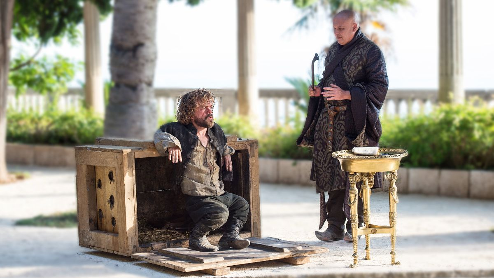
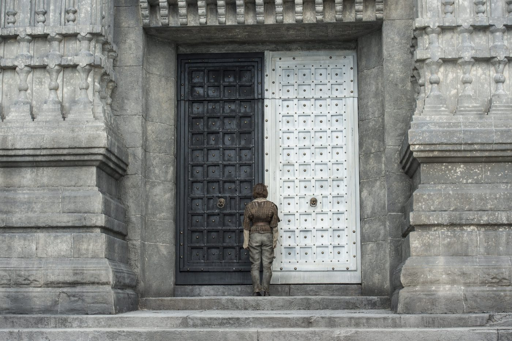
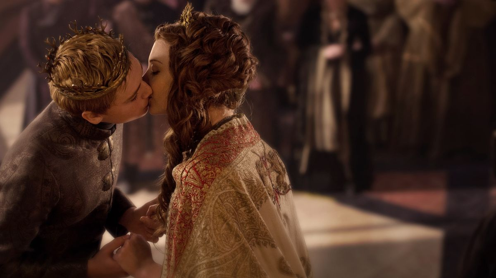
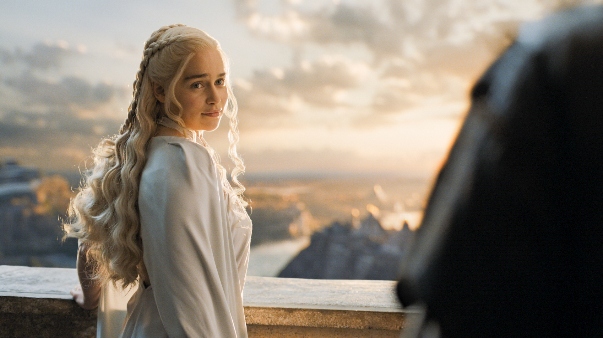
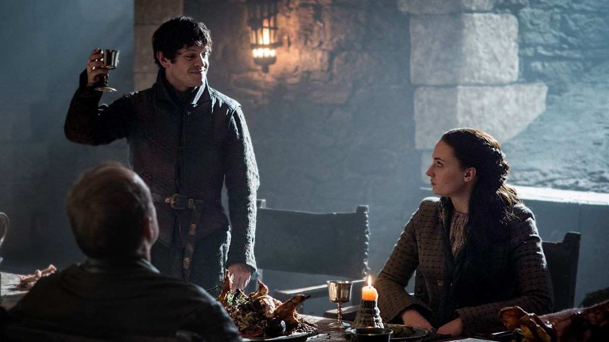
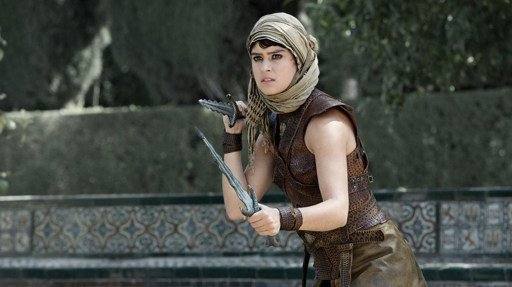
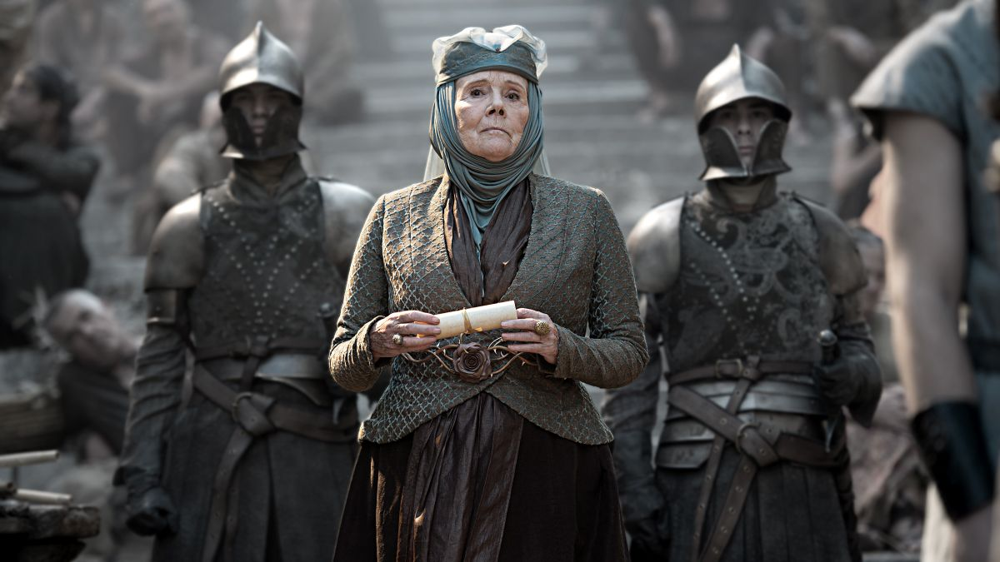
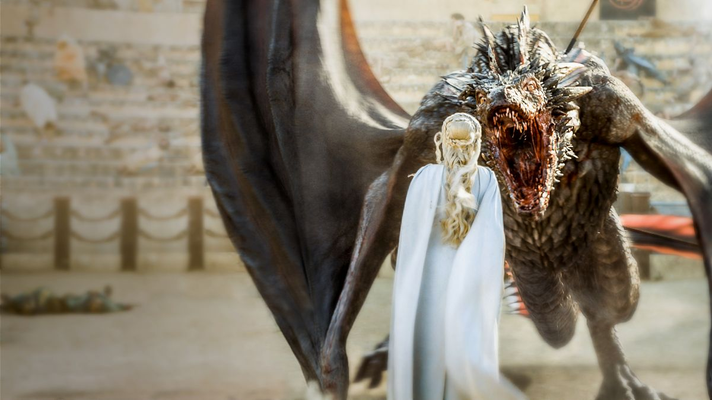
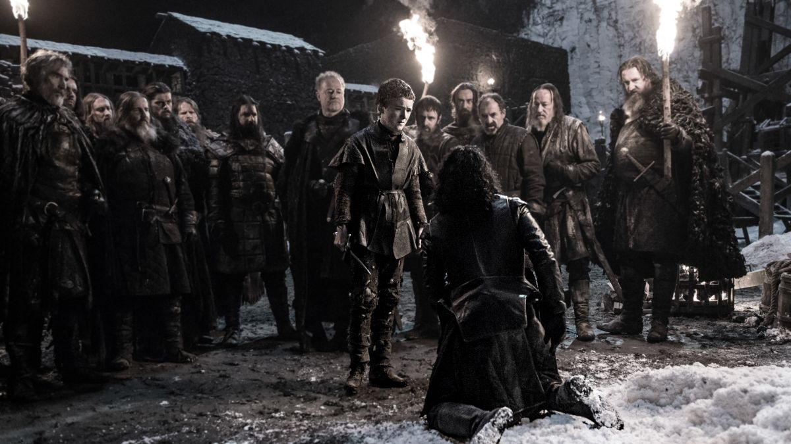

5ª TEMPORADA
Episódio 01 – The Wars to Come
Sinopse: Cersei e Jaime tentam se ajustar em um mundo sem Tywin. Varys revela uma conspiração à Tyrion. Dany enfrenta uma nova ameaça ao seu governo. Jon se encontra no meio de dois reis.

Episódio 02 – The House of Black and White
Sinopse: Arya chega a Braavos. Pod e Brienne encontram problemas na estrada. Cersei teme pela segurança de sua filha em Dorne enquanto Ellaria Sand procura vingança pela morte de Oberyn. Stannis tenta Jon. Um conselheiro tenta Dany.

Episódio 03 – High Sparrow
Sinopse: Em Braavos, Arya vê o Deus de Muitas faces. Em Porto Real, Rainha Margaery se diverte com seu novo marido. Tyrion e Varys andam pela Grande Ponte de Volantis.

Episódio 04 – Sons of the Harpy
Sinopse: Margaery busca um conselho prudente. Jaime se esforça em terras estrangeiras. Dany responde ao chamado da Harpia

Episódio 05 – Kill the Boy
Sinopse: Dany Emilia Clarke tem uma decisão difícil em Meereen. Jon Kit Harington pede ajuda a um aliado inesperado. Brienne Gwendoline Christie procura por Sansa Sophie Turner. Theon Alfie Allen continua a mercê de Ramsay Iwan Rheon.

Episódio 06 – Unbowed, Unbent, Unbroken
Sinopse: Arya Maisie Williams treina. Jorah Iain Glen e Tyrion Peter Dinklage encontram mestres de escravos. Trystane Toby Sebastian e Myrcella Nell Tiger Free fazem planos. Jaime e Bronn alcançam seu destino. As Serpentes de Areia atacam.

Episódio 07 – The Gift
Sinopse: Jon prepara-se para um conflito. Sansa tenta falar com Theon. Brienne espera por um sinal. Stannis Stephen Dillane permanece obstinado. Jaime tenta se reconectar com sua família.

Episódio 08 – Hardhome
Sinopse: Arya faz progressos em seu treinamento. Sansa confronta um antigo amigo. Cersei Lena Headey passa por maus bocados. Jon viaja.

Episódio 09 – The Dance of Dragons
Sinopse: Jon retorna à Muralha; Arya encontra alguém do passado; Mace visita o Banco de Ferro; Stannis enfrenta uma decisão difícil; Daenerys assiste uma celebração esportiva.

Episódio 10 – Mother’s Mercy
Sinopse: Stannis marcha. Dany é cercada por estranhos. Cersei procura por perdão. Jon é desafiado.
